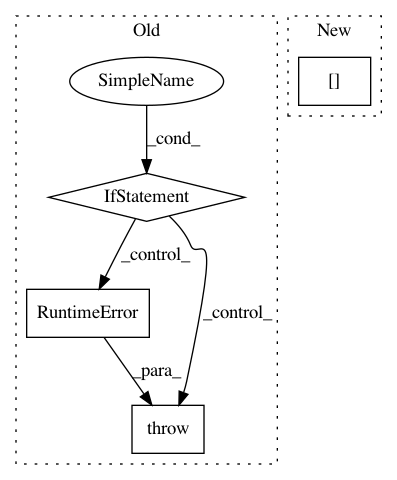

9c158b87f5fb2dca1ed95884e667ab2fc218e1b7,dragonn/models.py,SequenceDNN,deeplift,#SequenceDNN#,175
Before Change
Returns (num_task, num_samples, 1, num_bases, sequence_length) deeplift score array.
if sys.version_info[0] != 2:
raise RuntimeError("DeepLIFT requires Python2!")
assert len(np.shape(X)) == 4 and np.shape(X)[1] == 1
from deeplift.conversion import keras_conversion as kc
from deeplift.blobs import NonlinearMxtsMode
After Change
score_func = deeplift_model.get_target_contribs_func(
find_scores_layer_idx=0)
// use a 40% GC reference
input_references = [np.array([0.3, 0.2, 0.2, 0.3])[None, None, :, None]]
// get deeplift scores
deeplift_scores = np.zeros((self.num_tasks,) + X.shape)
for i in range(self.num_tasks):
In pattern: SUPERPATTERN
Frequency: 3
Non-data size: 4
Instances
Project Name: kundajelab/dragonn
Commit Name: 9c158b87f5fb2dca1ed95884e667ab2fc218e1b7
Time: 2017-05-01
Author: jisraeli@stanford.edu
File Name: dragonn/models.py
Class Name: SequenceDNN
Method Name: deeplift
Project Name: onnx/onnxmltools
Commit Name: 2eaf9bbdcb59c2c37127b29e47eccf36b3b8682a
Time: 2019-02-26
Author: wschin@outlook.com
File Name: onnxmltools/convert/coreml/operator_converters/neural_network/Crop.py
Class Name:
Method Name: convert_crop
Project Name: inferno-pytorch/inferno
Commit Name: e0720b8436d8e309af80a53e1ebf59cfc1a1ad52
Time: 2018-09-19
Author: constantin.pape@iwr.uni-heidelberg.de
File Name: inferno/extensions/model/unet.py
Class Name: UNetBase
Method Name: _forward_sanity_check